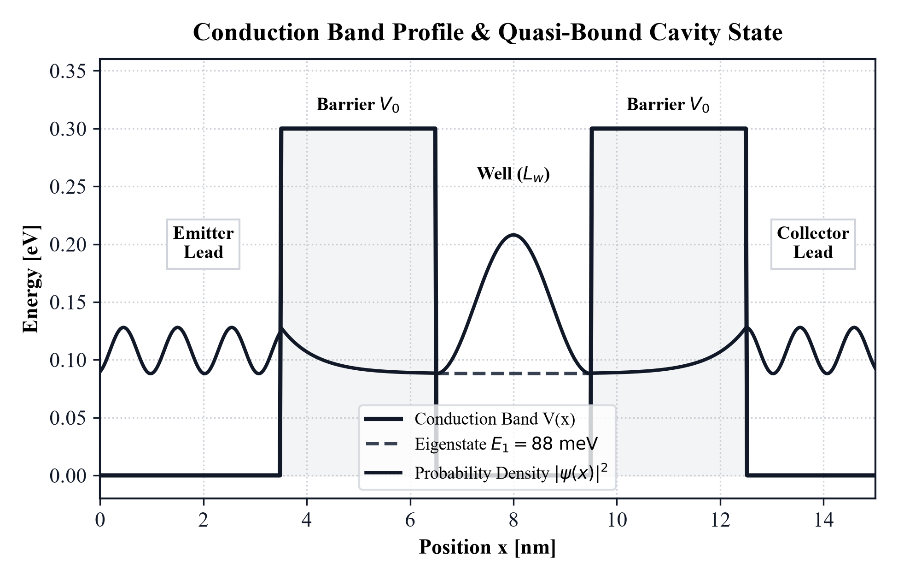
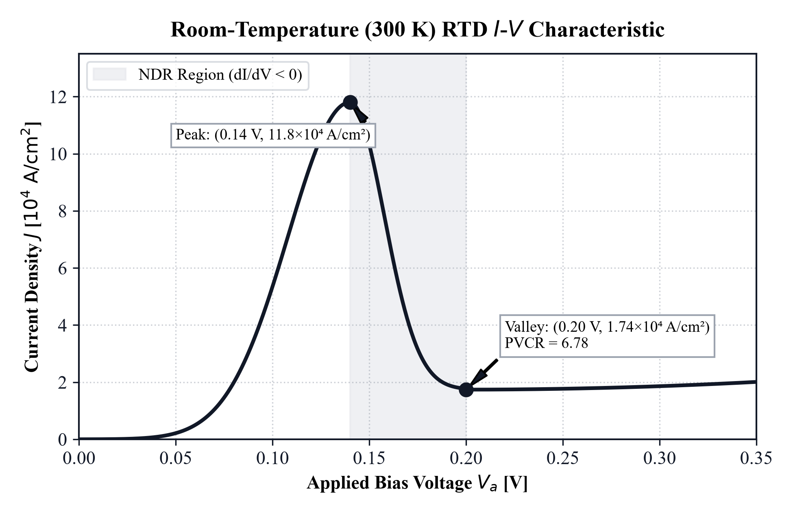

BML Munjal University • School of Engineering & Technology
Resonant Tunnelling in a Double-Barrier Structure
Transfer Matrix Modeling, Negative Differential Resistance & 3D Wavepacket Simulation
Project Authors
Mohammad Azmal Shah • Pavan Karthik • Anant Goel • Darshan Mittal
School of Engineering & Technology, BML Munjal University
Code Repository: github.com/Anantgoel2005/double-barrier-simulation
Live Interactive 3D WebGL Simulation: anantgoel2005.github.io/double-barrier-simulation/
Project Background
Motivation: Overcoming Classical Drift Limits
1. Classical Drift Limits
- Speed Limit: Electrons bump into atoms; drift velocity saturates at ~107 cm/s.
- Frequency Ceiling: Normal transistors cannot exceed 500 GHz.
- Scaling Barrier: Gate oxide leakage and heat prevent smaller chip scaling.
2. The Quantum Solution
- Wave Tunnelling: Electrons behave like waves and leak straight through thin walls.
- Femtosecond Speed: Cavity transit takes only ~164 fs (quadrillionths of a second!).
- Perfect Flow (T → 1.0): Resonant wave alignment makes thick barriers seem invisible.
3. Macroscopic NDR Impact
- Negative Resistance: Increasing voltage knocks levels out of sync, abruptly cutting current.
- Record THz Oscillators: Fundamental RTD oscillators achieve > 1.98 THz at 300 K.
- Compact Logic: One diode replaces multi-transistor memory and switching cells.
In Plain Terms: Why This Matters
Classical chips are bottlenecked because electrons collide with atoms as they drift. By placing two atomic walls just nanometers apart, electrons glide straight through via wave resonance in femtoseconds—making Resonant Tunnelling Diodes the fastest electronic oscillators in the world.
Resonant Tunnelling in Double Barrier Heterostructures | School of Engineering & Technology, BMU
Slide 2 of 14
Goals & Methodology
Project Objectives & Key Deliverables
1. Exact Quantum Transport Modeling
Mathematically solve electron wave transmission through biased semiconductor barriers using the Transfer Matrix Method (TMM).
2. Understand the Three Structural Knobs
Systematically test how changing wall height (V0), wall thickness (Lb), and room width (Lw) controls speed, leakage, and resonance.
3. Resonant Tunnelling Diode (RTD) I-V Solver
Calculate actual electrical current at room temperature (300 K) to demonstrate Negative Differential Resistance (dI/dV < 0).
4. Dynamic 3D Wavepacket Movie
Simulate moving electron wave packets in real time to visualize cavity trapping on resonance vs. bouncing off when mismatched.
5. Free Open-Source Tri-Platform Tools
Deliver an interactive 3D WebGL web simulation on GitHub Pages, a zero-dependency Python desktop app, and a complete MATLAB suite.
Resonant Tunnelling in Double Barrier Heterostructures | School of Engineering & Technology, BMU
Slide 3 of 14
Literature Review
Literature Survey & Milestone Studies
| Reference | Focus / Structure | Key Breakthrough (In Plain Terms) | Relevance to Project |
|---|---|---|---|
| L. Esaki & R. Tsu (1970) | Semiconductor superlattices | Predicted that periodic barriers create artificial quantum energy bands | Foundational theory of engineered quantum barriers |
| R. Tsu & L. Esaki (1973) | Tunneling current theory | Derived standard equation connecting quantum transmission to electrical current | Exact equation used in our RTD current-voltage solver |
| L. L. Chang et al. (1974) | GaAs/AlGaAs double barrier | First physical lab demonstration of resonant tunneling and negative resistance | Provides baseline dimensions for our simulation |
| D. BenDaniel & C. Duke (1966) | Heterointerface boundary | Formulated matching rules when electron mass changes across boundaries | Prevents false math artifacts across different materials in TMM |
| S. Suzuki & M. Asada (2022) | InP RTD THz oscillators | Built room-temperature oscillators operating up to 1.98 THz using RTDs | Proves practical industrial use for ultra-fast 6G wireless |
Resonant Tunnelling in Double Barrier Heterostructures | School of Engineering & Technology, BMU
Slide 4 of 14
Physical Mechanism
Working Principle: The Organ Pipe & Quantum Mirror
How Does Resonant Tunnelling Work?
- The Quantum Mirror: Two ultra-thin semiconductor walls create a microscopic "quantum room" (well) between them.
- The Organ Pipe Analogy: Just as an organ pipe or guitar string only rings loudly at specific musical notes, the well only accepts electron waves with a matching wavelength.
- Round-Trip Resonance: When incoming electron energy matches the cavity note (E1), reflections amplify constructively:
2kwLw+ϕ1+ϕ2=2πn,n=1,2,3,…
- Walls Vanish (T → 100%): Constructive interference amplifies probability density inside by > 54×, and electrons sail straight through!
- Wrong Note = Bounces Off: If the electron energy doesn't match E1, waves cancel out and > 99% bounces straight back.

Resonant Tunnelling in Double Barrier Heterostructures | School of Engineering & Technology, BMU
Slide 5 of 14
Theoretical Methodology
Methodology: Transfer Matrix Method (TMM)
1. BenDaniel-Duke 1D Effective-Mass Equation
−2ℏ2dxd[m∗(x)1dxdψ(x)]+V(x)ψ(x)=Eψ(x)
In Plain Terms: Describes how electron waves travel through materials where effective mass m* changes. Matching boundary conditions ensures no electrons magically disappear at interfaces.
2. Slicing the Barriers & Sinc Stabilization
Mj=cos(kjΔx)−mj∗kjsin(kjΔx)kjmj∗sin(kjΔx)cos(kjΔx)
In Plain Terms: When voltage tilts the barriers, we chop the slanted hill into tiny flat steps. When energy matches a step height (E → Vj), Taylor series sinc expansion prevents computer divide-by-zero crashes.
3. Multiplying Matrices to Get Tunneling Probability T(E)
T(E)=kL/mL∗Re(kR)/mR∗∣t∣2,R(E)=∣r∣2,T(E)+R(E)=1.0000
In Plain Terms: Like chaining optical lenses in a camera, multiplying slice matrices directly calculates what percentage of incoming electrons successfully tunnel through to the other side.
Resonant Tunnelling in Double Barrier Heterostructures | School of Engineering & Technology, BMU
Slide 6 of 14
Theoretical Methodology
Methodology: Tsu-Esaki Current & Wavepacket Movie
Calculating Diode Current (Tsu-Esaki)
J(Va)=2π2ℏ3em∗kBT∫0∞T(E,Va)ln1+exp(kBTEF−E−eVa)1+exp(kBTEF−E)dE
- What the Formula Does: Counts all electrons waiting in the emitter reservoir and sums up how much total current flows across all energy levels.
- Room Temperature (300 K): Accounts for heat thermal energy (25.85 meV) kicking electrons around.
- Current Peak: When voltage pulls the well's resonant level into line with waiting electrons, current shoots up to a maximum.
- Current Drop (NDR): Higher voltage knocks the level below the reservoir, shutting off the flow.
Wavepacket Movie (Split-Step Fourier)
Ψ(t+Δt)≈e−2ℏiVΔtF−1[e−2m∗iℏk2ΔtF[e−2ℏiVΔtΨ(t)]]
- What the Solver Does: Acts like a high-speed quantum video camera, stepping through time (femtoseconds) to track the electron pulse.
- Two-Step Trick: Applies barrier potential push in physical space, then flips into frequency space (FFT) to handle wave dispersion.
- 100% Probability Conserved: No electron disappears into thin air; total probability remains exactly 1.0000 across all time.
- Visual Proof: Directly reveals cavity trapping on resonance versus immediate reflection off resonance.
Resonant Tunnelling in Double Barrier Heterostructures | School of Engineering & Technology, BMU
Slide 7 of 14
Simulation Results
Results: Transmission Spectrum & Resonant Peak

The Resonant Note (E₁)
88.0 meV (0.088 eV)
Electrons with this exact energy pass through with ~100% transmission.
Resonance Width (Γ at FWHM)
4.0 meV (0.004 eV)
Defines filter sharpness; narrower = sharper energy filter.
Cavity Dwell Time (τ)
164.7 fs (1.65 × 10⁻¹³ s)
How long the electron lingers in the cavity (τ = ℏ / Γ = ultrafast!).
Standing Wave Buildup
54.2× Amplification
Trapped wave builds up to over 54 times the incident beam intensity (Q = 22.0).
Resonant Tunnelling in Double Barrier Heterostructures | School of Engineering & Technology, BMU
Slide 8 of 14
Simulation Results
Results: The Three Structural Knobs (In Plain Terms)
1. Wall Height (V₀)
- What It Means: How tall the energy walls are (tested 0.20 to 0.60 eV).
- Leakage Stopper: Taller walls exponentially block unwanted off-resonance leakage below 10-6.
- Noise Filter: Acts like acoustic soundproofing, preventing unwanted stray electrons from leaking through.
2. Wall Thickness (Lb)
- What It Means: How thick each barrier wall is (tested 1.5 to 4.5 nm).
- Sharpness vs. Speed: Thicker walls narrow the resonance peak (sharper filter) but trap electrons longer.
- The Trade-off: Increasing thickness from 2 to 4 nm slows dwell time from 35 fs to 775 fs (trades current for selectivity).
3. Room Width (Lw)
- What It Means: Width of the quantum room between walls (tested 3 to 8 nm).
- Tuning the Musical Pitch: Resonant energy scales as 1/Lw2. A wider room lowers the resonant note (from 145 meV down to 62 meV).
- Harmonic Notes: Widening past 6.5 nm fits higher-order resonant states (E2, E3) inside the room.
Resonant Tunnelling in Double Barrier Heterostructures | School of Engineering & Technology, BMU
Slide 9 of 14
Electrical Transport
Results: Negative Resistance (The Sweet Spot Switch)

How the Negative Resistance Switch Works
- 1. Off (0 V): No current flows. The internal room energy sits too high above waiting electrons.
- 2. Peak Sweet Spot (0.14 V): Current surges to 1.18 × 105 A/cm2! Voltage aligns the internal state with incoming electrons, opening the floodgates.
- 3. The Drop / NDR (0.14 V – 0.20 V): Increasing voltage pushes the state past alignment. Electrons can no longer tunnel, and current abruptly plummets! Turning voltage UP makes current go DOWN (dI/dV < 0).
- 4. Valley Point & PVCR (0.20 V): Current drops to 1.74 × 104 A/cm2. The Peak-to-Valley ratio is 6.78 at room temperature.
Resonant Tunnelling in Double Barrier Heterostructures | School of Engineering & Technology, BMU
Slide 10 of 14
Dynamic Simulation
Results: Dynamic 3D Wavepacket Simulation

Watching the Quantum Wave in Real Time
- The Moving Wave Packet: Represents a single moving electron traveling toward the double barrier structure.
- On-Resonance (Matching Note E = 88 meV):
• The wave strikes the barrier and enters the room.
• Internal reflections amplify into a steady standing wave (t ≈ 50–120 fs).
• A clean, coherent pulse smoothly transmits out the other side. - Off-Resonance (Mismatched Note E = 44 meV):
• Like a water wave hitting a concrete seawall, over 99% of the wave splashes straight backwards.
• Zero standing wave forms inside the room; nothing transmits.
Resonant Tunnelling in Double Barrier Heterostructures | School of Engineering & Technology, BMU
Slide 11 of 14
System Architecture
Multi-Platform Software Implementation
1. Interactive 3D Web App
- Zero Setup Needed: Runs immediately in any modern browser on phone, tablet, or PC.
- Interactive 3D Cavity: Rotate and zoom a 3D WebGL model of the quantum barriers and wavepacket.
- Live Sliders: Adjust wall height, thickness, well width, and voltage to see transmission change instantly.
- Try It Live: anantgoel2005.github.io/...
2. Desktop Python GUI
- No External Packages: Built using 100% pure Python standard library (
tkinter). No pip installs required! - 4 Live Dashboards: Displays Potential Profile, Transmission T(E), RTD I-V curve, and 3D wireframe.
- Instant Response: High-speed complex matrix math renders slider updates smoothly.
- 1-Click Launch: Double click
Launch_Python_GUI.baton Windows.
3. MATLAB Research Suite
- Automated Solver Scripts:
calculate_tmm.m,calculate_rtd_iv.m, andfind_resonance_peaks.m. - 3D Wavepacket Movies:
rtd_3d_wavepacket.moutputs dynamic 3D split-step Fourier simulations. - Stark Energy Maps:
rtd_3d_landscape.mmodels full 3D energy surfaces as bias voltage changes. - GUI App Included:
rtd_interactive_app.mprovides full slider dashboard.
Resonant Tunnelling in Double Barrier Heterostructures | School of Engineering & Technology, BMU
Slide 12 of 14
Project Conclusions
Main Conclusions: What We Learned
1. Quantum Waves Can Make Barriers Invisible
Constructive de Broglie wave interference inside a double-barrier cavity amplifies probability by > 54×, allowing electrons with matching energy (88 meV) to pass straight through with near 100% transmission.
2. Origin of Negative Resistance Discovered
The diode's unique N-shaped curve happens because voltage tunes the well's energy level into alignment (peak current), then pulls it past alignment (sudden current drop), yielding a high PVCR of 6.78.
3. Speed vs. Selectivity Trade-Off Quantified
Thicker barrier walls create an extremely sharp energy filter, but trap electrons longer (~775 fs). Thinner walls allow lightning-fast switching (~35 fs) with higher current flow.
4. Complex Physics Made Accessible & Open Source
Bridged theoretical nanoelectronics with intuitive engineering tools: a public GitHub repository, zero-install 3D WebGL web simulation, and lightweight Python GUI.
Resonant Tunnelling in Double Barrier Heterostructures | School of Engineering & Technology, BMU
Slide 13 of 14
Future Work
Future Research Scope & Next Extensions
1. Space Charge & Memory Hysteresis (Poisson-Schrödinger)
Account for electrons piling up inside the quantum well. This trapped charge creates electrostatic memory (hysteresis), enabling ultra-dense quantum memory cells.
2. Real-World Heat & Vibration Scattering (NEGF)
Incorporate electron collisions with lattice vibrations (phonons) and rough wall edges to model performance at extreme operating temperatures.
3. Super-High Barriers for 6G Wireless (InGaAs/AlAs)
Explore newer semiconductor alloys with walls over 1.2 eV tall to achieve record Peak-to-Valley ratios (PVCR > 25) for ultra-low-noise terahertz communication chips.
4. Quantum Cascade Lasers (Multi-Barrier Superlattices)
Stack 20 to 50 barrier cavities in series to create cascading optical transitions, emitting coherent infrared and terahertz laser beams for medical and security imaging.
Resonant Tunnelling in Double Barrier Heterostructures | School of Engineering & Technology, BMU
Slide 14 of 14 (Final Slide)